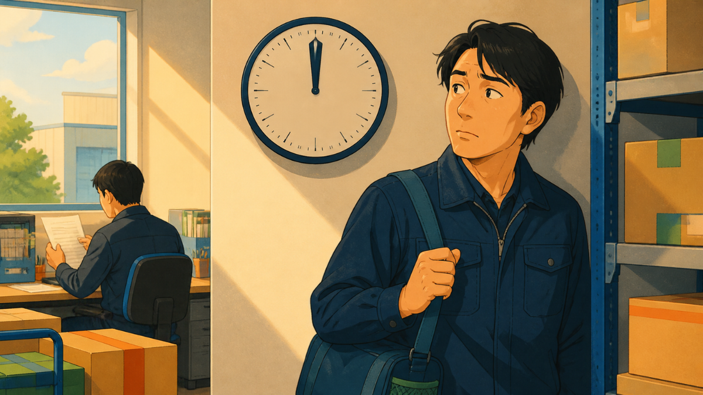
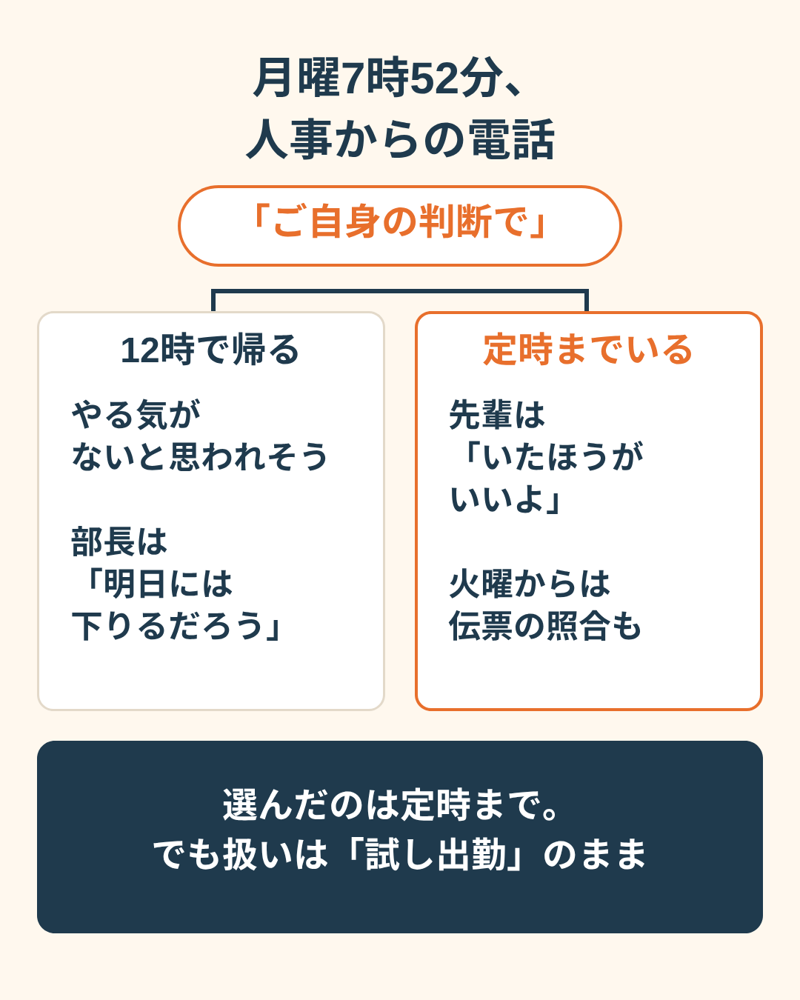
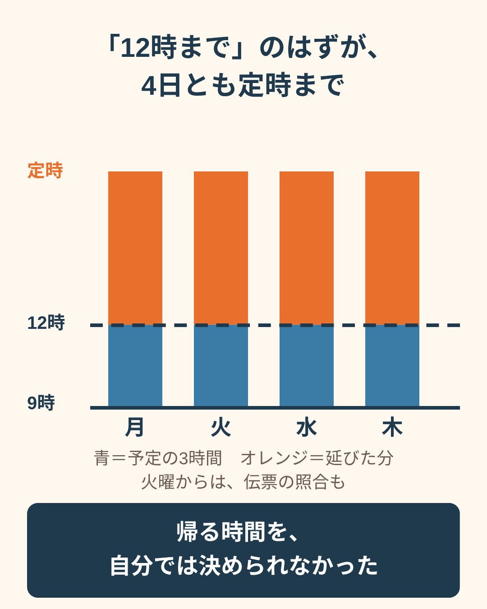
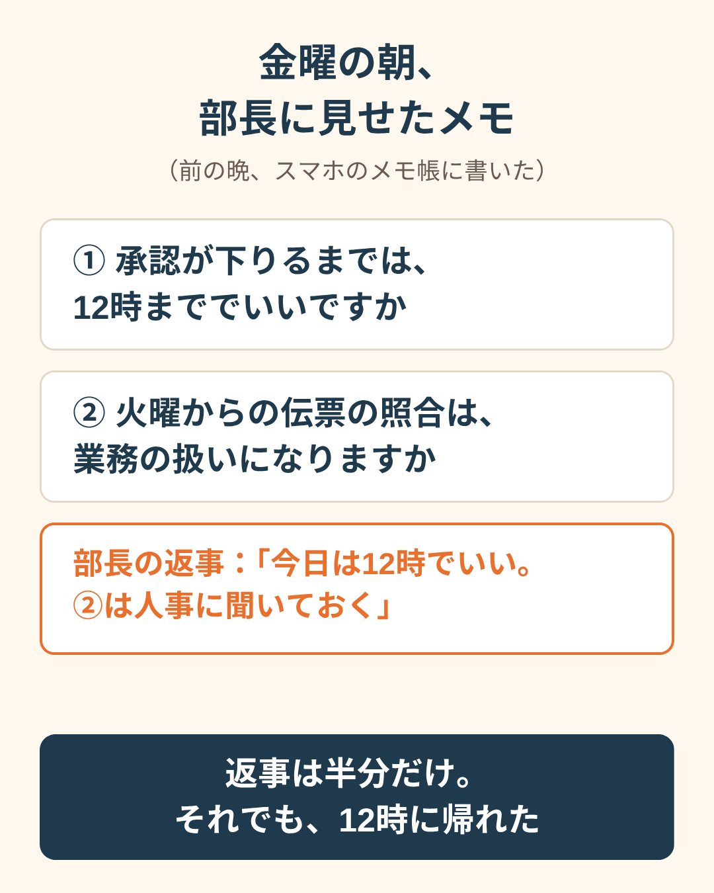
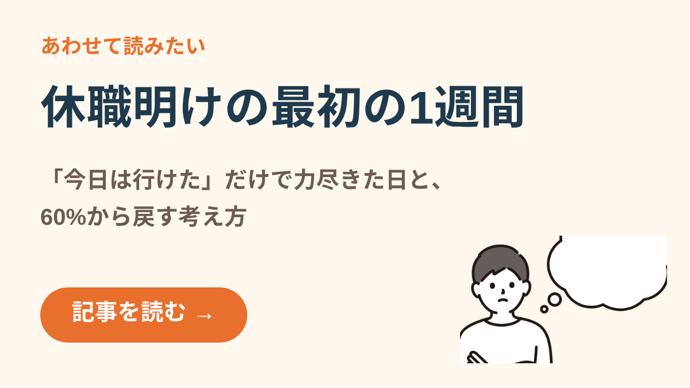
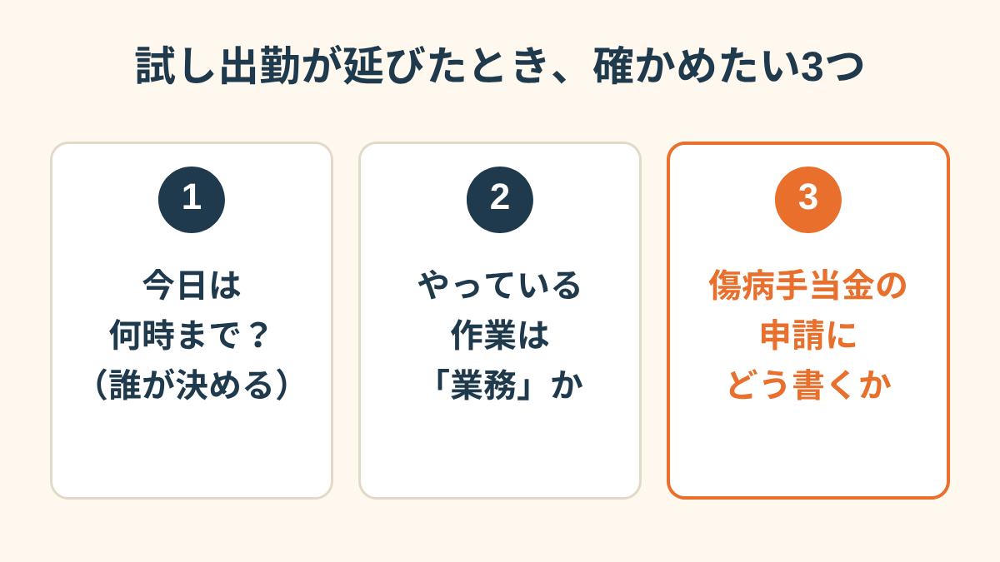

「人事の承認が、まだ下りてなくてですね。今週も、試し出勤のままでお願いします」
月曜の朝、7時52分。玄関で靴をはいたところだった。
「あ、はい。……じゃあ今日も、12時まで、ですか」
電話の向こうで、少し間があった。
「そこは、ご自身の判断で大丈夫です」
靴ひもを結んだまま、しばらく立っていた。判断していいと言われたのに、何を基準にすればいいのか、ひとつも分からなかった。
最終日のはずだった金曜
36歳。食品の物流センターで、在庫管理の事務をしている。
春に適応障害と言われて、5か月休んだ。秋になって主治医が「そろそろ」と言ってくれて、10月の頭から試し出勤が始まった。
9時から12時まで。2週間。仕事はしない約束で、やることは業務の手順書を読み直すことと、在庫システムの画面を眺めることくらい。
正直、ひまだった。ひまなのに、12時に事務所を出るころにはぐったりしていた。帰りの電車で、毎日ほぼ寝ていた。
2週目の金曜、産業医の面談があった。「睡眠もとれてるし、問題なさそうですね」。そのあと部長に呼ばれて、こう言われた。
「来週から、フルで戻れると思うよ。人事には上げとくから」
帰りぎわ、ロッカーに作業用のジャケットを掛けた。5か月ぶりに、来週も使うつもりで。

月曜、7時52分の電話
それで、冒頭の電話になる。
電話を切って、とりあえず家を出た。電車の中でずっと考えていた。12時で帰るか、定時までいるか。
事務所に着いて、隣の席の先輩に話した。入社のころから面倒を見てくれている人だ。
「え、そんなの定時までいたほうがいいって。印象違うから。部長も、もう戻る前提で見てるでしょ」
10時ごろ、部長にも一応伝えた。部長は「ああ、人事遅いんだよな。明日には下りるだろ」と言って、会議に行ってしまった。
12時になった。時計を見て、鞄を持って、立ち上がりかけて、もう一回座った。「やる気がない」と思われるのが、5か月休んだあとでは一番こわかった。

午後は、手順書の2周目を読んだ。同じページを3回めくった気がする。17時半、みんなと一緒に「お疲れさまでした」と言って帰った。言いながら、自分が何をお疲れさまだったのか、よく分からなかった。
「病院の受付なんですけど、リハビリ出勤の3日目に『人足りないから、受付だけちょっと座っててくれる？』って言われて。座るだけならって思うじゃないですか。結局、会計まで普通にやってて。月末に明細見たら、その週、0円で。誰も悪気がないのが、いちばん言いにくかったです」
気づいたら、伝票を照合していた
火曜。承認の連絡は来なかった。
10時すぎ、先輩が出荷の伝票の束を抱えて戻ってきた。午後の便に間に合わないらしい。
「ごめん、これとシステムの数字、合ってるかだけ見ててくれる？ 見るだけでいいから」
見るだけ、のつもりだった。ずれていた3件に付箋を貼って、気づいたら備考欄の入力まで手伝っていた。手が覚えていたのが、ちょっとうれしかった。それも本当だ。
水曜も、木曜も、同じだった。朝、人事からの連絡はない。12時になる。座り直す。午後は伝票。


申請書の、あの欄
木曜の夜。台所のテーブルで、傷病手当金の申請書を広げた。今週出すつもりで、先延ばしにしていたやつだ。
療養のために休んだ期間を書く欄で、ボールペンが止まった。
今週の月曜から木曜は、どっちなんだろう。休んでいたのか。働いていたのか。会社の扱いは「試し出勤」で、たぶん給料は出ない。でも、伝票は照合した。
通帳アプリを開いて、すぐ閉じた。5か月で、貯金はだいぶ減っていた。来週から給料が戻るつもりで、いろいろ計算していた。
その夜、「試し出勤 業務 給料」で調べて、厚生労働省の「こころの耳」に、社会保険労務士が答えているページを見つけた。
読んで、しばらく動けなかった。業務を命じたなら賃金を払う必要がある、と書いてあった。合意していても、払わないのは許されない、とも。半日でも元の仕事をしたら、傷病手当金が出ないことがある、とも。
この4日間は、どっちの箱にも入っていなかった。
 復職前の試し出勤時の労災補償や傷病手当金等の注意点は？（こころの耳）社労士が答えるQ&A。試し出勤中の賃金と傷病手当金の考え方。外部サイトが開きます →
復職前の試し出勤時の労災補償や傷病手当金等の注意点は？（こころの耳）社労士が答えるQ&A。試し出勤中の賃金と傷病手当金の考え方。外部サイトが開きます →
「試し出勤、『あと2週間様子見ましょう』が3回続いたんですよ。3回目で、カレンダーに×つけるのやめました。ゴールがないマラソンって、走ってる意味が分からなくなるんですよね。主治医に『延長の理由、聞いてもいいんですよ』って言われて、あ、聞いていいんだ、って。聞いたら、理由は人事の担当が替わったから、でした」
金曜の朝、2行のメモ
夜中の1時ごろ、スマホのメモ帳に2行だけ書いた。口で言おうとすると、たぶん途中で「いや、大丈夫です」と言ってしまう。それは自分がいちばん分かっていた。

金曜の朝、部長が席に着いたところで、スマホを差し出した。「すみません、これだけ確認させてください」。
部長は画面を見て、しばらく黙っていた。それから、ちょっと気まずそうに頭をかいた。
「……ああ、そうか。そうだよな。今日は12時でいい。伝票のほうは、人事に聞いとく」
先輩は横で聞いていて、あとで小さく「ごめん、俺が頼んだやつだ」と言った。先輩が悪いとは思っていない。忙しかったのも、本当だから。
12時5分の電車
12時。鞄を持って、立ち上がった。今度は、座り直さなかった。
「お先に失礼します」と言ったら、先輩が「おう、お大事に」と言った。お大事に、と言われるのは、なんだか久しぶりだった。
12時5分の電車は、がらがらだった。2週間、毎日乗っていた電車なのに、今日だけは少し悪いことをしている気がした。窓の外がまぶしくて、目を閉じた。寝なかった。
人事から電話が来た。承認が下りた、と。水曜から正式に復職になった。
月曜から木曜の4日間の扱いは、「確認中です」のまま、まだ返事がない。申請書のあの欄も、空いたままだ。
2行のメモは、消さずに残してある。次に何か聞きたくなったら、たぶんまた、このやり方をする。
試し出勤が終わったあとにも、「最初の1週間」が待っている。「今日は行けた」だけで力尽きた初日と、そこから戻していく考え方の話。

休職明けに「最初の1週間」をどう乗り越えるか →
この記事に、聞いてみたいことはありますか？
「自分の場合はどうなんだろう」と思ったことを、気軽に書いてみてください。いただいた質問は個別にお返事したうえで、匿名で記事にすることがあります。